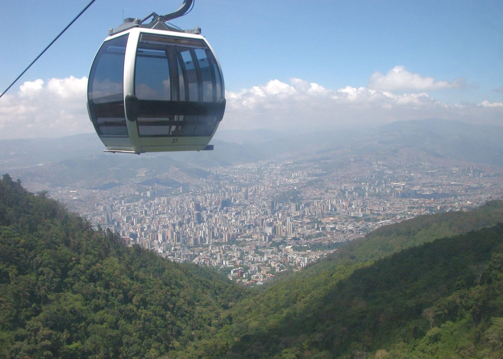

Visit
Ride to the Top of El Ávila
No visit to Caracas is complete without a trip to El Ávila National Park (Waraira Repano). Take the Teleférico de Caracas, a scenic cable car ride, to the summit, where you’ll find cool mountain breezes, stunning panoramic views, and charming restaurants serving hot chocolate and fresh strawberries with cream. For adventure seekers, hiking trails lead to breathtaking waterfalls and hidden viewpoints.
Step Back in Time in the Historic Center
Walk the same streets where Simón Bolívar, the Liberator of South America, once stood. Start at Plaza Bolívar, the beating heart of the city, surrounded by colonial-era buildings like the Caracas Cathedral and the Casa Natal de Bolívar, the birthplace of Venezuela’s national hero. Just a short stroll away, explore El Panteón Nacional, the final resting place of Bolívar and other national figures, inside a majestic hall with a beautifully painted ceiling.
Immerse Yourself in Art & Culture
Caracas is a paradise for art lovers. Visit the Museum of Contemporary Art of Caracas, home to masterpieces by Picasso, Monet, and Venezuela’s own Carlos Cruz-Diez. For a night of theater or ballet, head to the Teresa Carreño Cultural Complex, a stunning venue where world-class performances come to life.

Taste the Flavors of Venezuela
Savor the city’s delicious gastronomy! Try the famous arepas, golden corn pockets stuffed with everything from cheese to shredded beef, or indulge in crispy tequeños, Venezuela’s beloved cheese sticks. In El Hatillo, a charming colonial-style village on the outskirts of Caracas, you’ll find quaint cafés and restaurants serving traditional dishes in a relaxed, picturesque setting.
{kind=link}
Shop, Stroll & Experience Local Life
For a taste of everyday Caracas, walk down Boulevard de Sabana Grande, a lively pedestrian street filled with shops, bookstores, and street performers. If you're looking for high-end shopping, Centro San Ignacio and Sambil Caracas offer luxury brands, entertainment, and fine dining.
Escape to the Caribbean
Just a short drive from the city, the Venezuelan coast awaits! Head to La Guaira, where golden beaches, fresh seafood, and warm Caribbean waters provide the perfect getaway from the city buzz.

Why Visit Caracas?
Caracas is more than just a capital—it’s an experience. Whether you’re exploring its rich history, hiking its majestic mountains, enjoying its vibrant nightlife, or tasting its incredible food, this city will leave you with unforgettable memories.